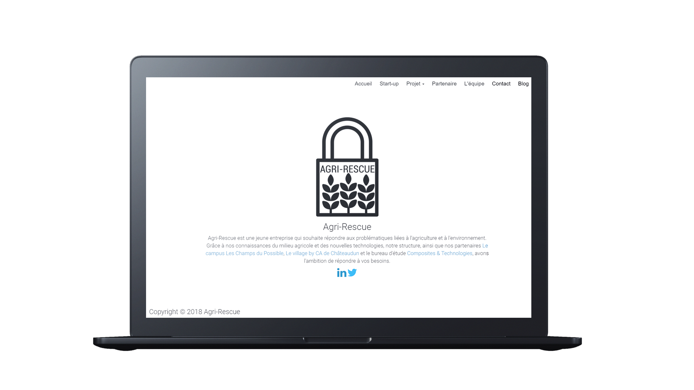

Agri-Rescue
Agri-Rescue est une jeune entreprise innovante qui souhaite répondre aux problématiques liées à l'agriculture et à l'environnement.
Bio
Réalisation d'un site web statique et dynamique pour Agri-rescue.
Le site présente la start-up ainsi que les différent projets.
Création du logo officiel pour Agri-rescue.
Projets réalisé avec Agri-Rescue

Réalisation d'un site web statique et dynamique pour Agri-rescue.
Création du logo officiel pour Agri-rescue.